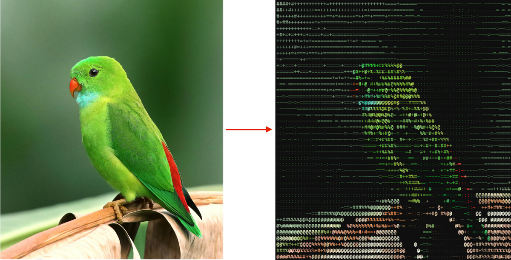
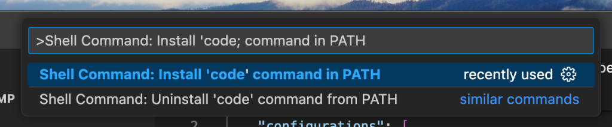
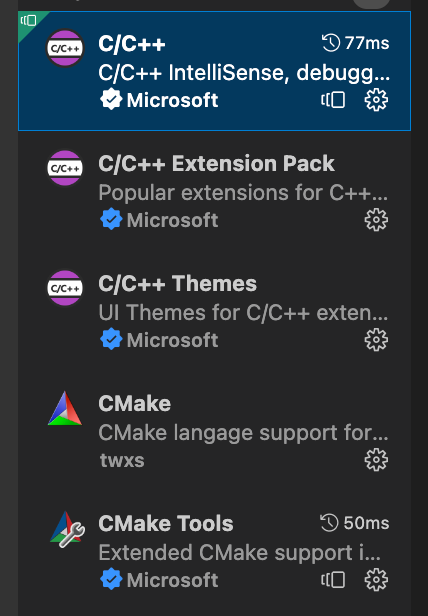

Setting up the C++ environment
Objectives
Using Conan, CMake and Visual Studio Code, you will learn to set up a C++ environment on Windows, macOS and Linux.
- How to install the C++ compiler on Windows, macOS and Linux.
- How to install Python and all the required Python modules.
- How to install Conan, the C++ package manager.
- How to install Visual Studio Code.
- How to run our first application.
What we will learn
After this lecture we will be able to build a compile C++ program called image2ascii. Image2Ascii will download a picture from an url, and it will convert it in a coloured ascii art. We will be able to download and compile all the required dependencies, build and run the program and make small changes to it.
The program is a slightly modification of the blog.conan.io blog post.
Introduction
There are several factors to consider when setting up the environment:
- It should be self-contained and reproducible
- It should be tool-friendly
A self-contained working environment makes collaboration with other people much more straightforward and makes setting up the CI/CD much quicker. Many companies opt to use docker for setting the working environment. I honestly think this is overkill. A working environment should require the bare minimum dependencies from the system and nothing more.
The environment should be able to build our project and simply the development process. Tools like auto competition, code navigation, code refactoring, code formatting, and static-analyser should be a must-have for our workflow. Setting up an IDE should be a high priority as it can affect our process. In this course, I will use Visual Studio Code as IDE. It's not my favourite, but it's free, cross-platform and customisable.
Terminal
C++ Toolchain
The C++ Toolchain is the collection of tools that translates our source code to an executable that can run in the target machine.
There are many different compilers available today. MSVC, GCC, MinGW, Clang, and Intel are the most popular. These compilers are very different from each other, and learning singularly all of them takes a lot of time and effort. To our rescue, some build tools abstract the specific compiler and allow us to switch between them easily.
A particular note about Clang: clang is part of a more extensive framework called LLVM. LLVM provides many tools for formatting the code, static analysis, and compilers.
How to install the C++ toolchain
Install Git
Git is a software control version. No knowledge of git will be required during this course.
Conan
Conan is a C++ package manager. A quick tutorial can be found in conan.io website.
After installing conan we can create a default profile
conan profile detect
It's also possible, and recommender, to install conan via a Python
virtual environment, for instance using pipenv. This requires
to install Python and pipenv but it also allows to have a full
self-contained environment.
For this tutorial I create some profiles and templates to easily use conan and create new projects from scratch. To install the conan configuration open a new terminal and create an empty directory somewhere in your home.
conan config install --type git https://github.com/elvisdukaj/cppyoga_conan_config.gitIDE
The IDE (integrated development editor) is an application combining tools to make coding easier. Usually, an IDE contains an editor where it is possible to write and edit the code and tools to run and debug the applications. Many available IDEs exist, but Visual Studio Code has become one of the most widespread. It's free and works on all the major platforms.
How to install Visual Studio Code
Setting up Visual Studio Code
Visual Studio Code has to be available from the command line. After launching Visual Studio Code, press Alt + ⇧ + P or (⌘ + ⇧ + P) and type “Shell Command: install 'code' command in PATH“
The next step is to install all the recommended C++ extensions. To install an extension, type Alt+⇧+X or ⌘+⇧+P and the extension's name. The following extensions are required:
- C/C++
- C/C++ Extension Pack
- C/C++ Themes (Optional)
- CMake
- CMake Tools
Below a screenshot with all the required extensions:
More information about how to set up a C++ environment can be found here.
Let's build our first program
Now that we have finally set up the environment we are able to build a complex program. The goal is to be build and run an application and not to understand what is the code doing.
The following steps are required:
- Clone the git project.
- Install the build and the release conan profiles.
- Start the IDE from the environment.
- Build and run the code from Visual Studio.
- Build and run the code from the terminal.
If you're using Visual C++, use the Powershell with the Visual Studio environment enabled.
echo "(1) Clone the project"
git clone https://github.com/elvisdukaj/cppyoga-image2ascii.git
cd cppyoga-image2ascii
echo "(2) Install the debug and release profiles. This will build and install all the third party dependencies"
conan build . --profile cppyoga/default --settings build_type=Debug --build missing
conan build . --profile cppyoga/default --settings build_type=Release --build missing
echo "(3) Lunch the IDE"
code .Let's review line by line what is happening.
-
git clonedownloads the project from GitHub to the cppyoga-image2ascii -
conan build ... --build missingdownloads and install all the third party dependencies needed to build our projects. This command can take long the first time. After downloading and installing the dependencies,conanwill cache the binaries, and it won't build them anymore. So the following calls will be much faster. After the dependencies are downloaded and build if necessary thanks to--build missingoption. The project is finally compiled.--settings build_type=Debugsays to make a Debug build. A debug build is not optimizing the code, making it easier to debug but also slower. A Release build is the optimized version of the program, but it's harder to debug.--profile PROFILEindicates conan what profile use for building the package. A profile is a set of settings specifying how the executables and the libraries will be built, this information includes the operating system, the used compiler